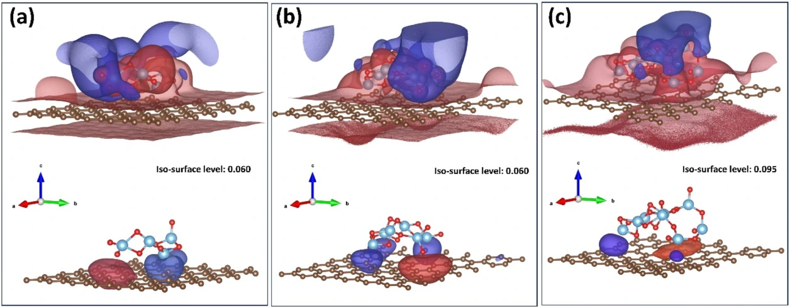

~1,870%
viscosity enhancement
CNPs@TiO2 increased viscosity relative to the off-field baseline at 3 wt.% and 3 kV/mm, with stable voltage application and no voltage collapse in the reported tests.
Read the paperElectro-responsive fluids
Engineering low-loading suspensions that develop a strong, reversible rheological response.
Two complementary material strategies guide this work. TiO2-modified carbon nanoparticles regulate charge transport at a carbon–oxide interface. APTS-functionalized silica changes the local chemical and electrostatic environment of dielectric particles. Both are studied as low-loading suspensions in silicone oil.
THE RESEARCH QUESTIONCan interface modification strengthen field-induced assembly without relying on high particle loading?

SELECTED OUTCOMES
CNPs@TiO2 increased viscosity relative to the off-field baseline at 3 wt.% and 3 kV/mm, with stable voltage application and no voltage collapse in the reported tests.
Read the paperAt the same 3 wt.% loading and 3 kV/mm field, APTS–SiO2 reached 17.82 Pa versus approximately 3.67 Pa for bare SiO2.
Read the paperThe two metrics describe different comparisons: field-induced viscosity enhancement relative to a suspension’s own off-field state, and yield stress relative to an unmodified particle control. Local DFT models support the interfacial interpretation; they do not directly calculate the many-particle yield stress.
THE EVIDENCE
ACS Applied Materials & Interfaces
Applied Surface Science
GET IN TOUCH
Research collaborations and professional inquiries.